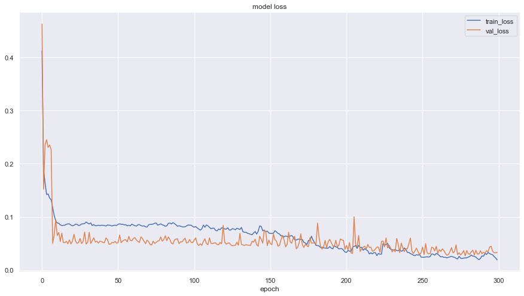
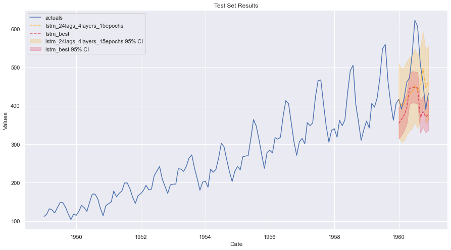
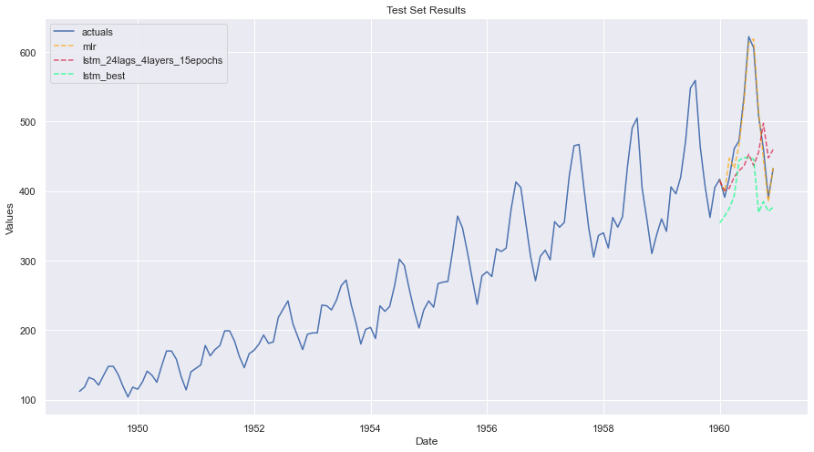
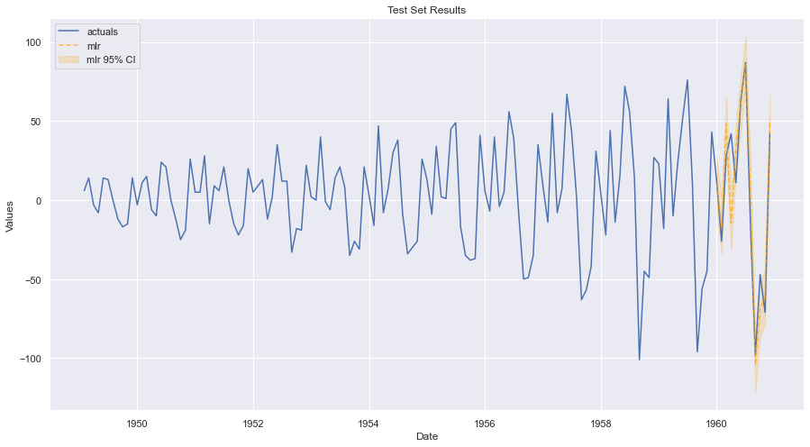
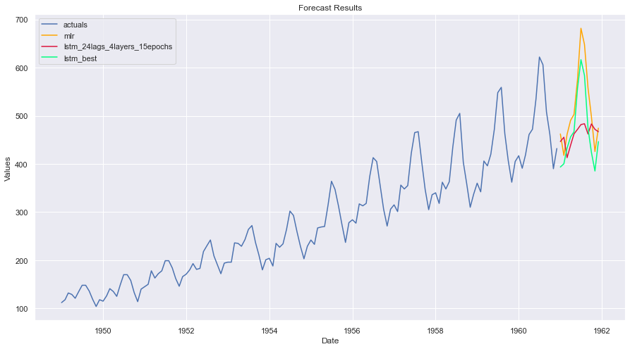

LSTM Example
[1]:
import pandas as pd
import numpy as np
import seaborn as sns
import matplotlib.pyplot as plt
from scalecast.Forecaster import Forecaster
sns.set(rc={'figure.figsize':(15,8)})
Data preprocessing
[2]:
data = pd.read_csv('AirPassengers.csv',parse_dates=['Month'])
[3]:
data.head()
[3]:
| Month | #Passengers | |
|---|---|---|
| 0 | 1949-01-01 | 112 |
| 1 | 1949-02-01 | 118 |
| 2 | 1949-03-01 | 132 |
| 3 | 1949-04-01 | 129 |
| 4 | 1949-05-01 | 121 |
[4]:
data.shape
[4]:
(144, 2)
[5]:
data['Month'].min()
[5]:
Timestamp('1949-01-01 00:00:00')
[6]:
data['Month'].max()
[6]:
Timestamp('1960-12-01 00:00:00')
EDA
[7]:
f = Forecaster(y=data['#Passengers'],current_dates=data['Month'])
f.plot()

[8]:
f
[8]:
Forecaster(
DateStartActuals=1949-01-01T00:00:00.000000000
DateEndActuals=1960-12-01T00:00:00.000000000
Freq=MS
ForecastLength=0
Xvars=[]
Differenced=0
TestLength=1
ValidationLength=1
ValidationMetric=rmse
ForecastsEvaluated=[]
CILevel=0.95
BootstrapSamples=100
CurrentEstimator=None
)
[9]:
f.plot_acf(lags=26)
plt.show()

[10]:
f.plot_pacf(lags=26)
plt.show()

[11]:
f.seasonal_decompose().plot()
plt.show()

[12]:
stat, pval, _, _, _, _ = f.adf_test(full_res=True)
print(stat)
print(pval)
0.8153688792060569
0.9918802434376411
LSTM Model
[13]:
f.set_test_length(12)
f.generate_future_dates(12)
f.set_estimator('lstm')
Attempt 1
[14]:
f.manual_forecast(call_me='lstm_default')
f.plot_test_set(ci=True)
4/4 [==============================] - 1s 2ms/step - loss: 0.3507
5/5 [==============================] - 1s 2ms/step - loss: 0.3386

Attempt 2
[15]:
f.manual_forecast(call_me='lstm_24lags',lags=24)
f.plot_test_set(ci=True)
3/3 [==============================] - 1s 5ms/step - loss: 0.3823
4/4 [==============================] - 1s 7ms/step - loss: 0.3503

Attempt 3
[16]:
f.manual_forecast(call_me='lstm_24lags_5epochs',lags=24,epochs=5,validation_split=.2,shuffle=True)
f.plot_test_set(ci=True)
Epoch 1/5
3/3 [==============================] - 2s 193ms/step - loss: 0.4549 - val_loss: 0.1873
Epoch 2/5
3/3 [==============================] - 0s 17ms/step - loss: 0.4461 - val_loss: 0.1813
Epoch 3/5
3/3 [==============================] - 0s 15ms/step - loss: 0.4374 - val_loss: 0.1752
Epoch 4/5
3/3 [==============================] - 0s 16ms/step - loss: 0.4287 - val_loss: 0.1691
Epoch 5/5
3/3 [==============================] - 0s 15ms/step - loss: 0.4199 - val_loss: 0.1631
Epoch 1/5
3/3 [==============================] - 2s 166ms/step - loss: 0.4308 - val_loss: 0.1668
Epoch 2/5
3/3 [==============================] - 0s 16ms/step - loss: 0.4225 - val_loss: 0.1609
Epoch 3/5
3/3 [==============================] - 0s 15ms/step - loss: 0.4142 - val_loss: 0.1551
Epoch 4/5
3/3 [==============================] - 0s 17ms/step - loss: 0.4059 - val_loss: 0.1493
Epoch 5/5
3/3 [==============================] - 0s 15ms/step - loss: 0.3975 - val_loss: 0.1434

Attempt 4
[17]:
from tensorflow.keras.callbacks import EarlyStopping
f.manual_forecast(call_me='lstm_24lags_earlystop_3layers',
lags=24,
epochs=25,
validation_split=.2,
shuffle=True,
callbacks=EarlyStopping(monitor='val_loss',
patience=5),
lstm_layer_sizes=(16,16,16),
dropout=(0,0,0))
f.plot_test_set(ci=True)
Epoch 1/25
3/3 [==============================] - 4s 432ms/step - loss: 0.4674 - val_loss: 0.1867
Epoch 2/25
3/3 [==============================] - 0s 27ms/step - loss: 0.4491 - val_loss: 0.1720
Epoch 3/25
3/3 [==============================] - 0s 26ms/step - loss: 0.4278 - val_loss: 0.1543
Epoch 4/25
3/3 [==============================] - 0s 26ms/step - loss: 0.4020 - val_loss: 0.1330
Epoch 5/25
3/3 [==============================] - 0s 28ms/step - loss: 0.3686 - val_loss: 0.1132
Epoch 6/25
3/3 [==============================] - 0s 26ms/step - loss: 0.3275 - val_loss: 0.1103
Epoch 7/25
3/3 [==============================] - 0s 26ms/step - loss: 0.2848 - val_loss: 0.1334
Epoch 8/25
3/3 [==============================] - 0s 34ms/step - loss: 0.2618 - val_loss: 0.1648
Epoch 9/25
3/3 [==============================] - 0s 31ms/step - loss: 0.2514 - val_loss: 0.1769
Epoch 10/25
3/3 [==============================] - 0s 27ms/step - loss: 0.2380 - val_loss: 0.1686
Epoch 11/25
3/3 [==============================] - 0s 26ms/step - loss: 0.2179 - val_loss: 0.1489
Epoch 1/25
3/3 [==============================] - 4s 424ms/step - loss: 0.4533 - val_loss: 0.1680
Epoch 2/25
3/3 [==============================] - 0s 33ms/step - loss: 0.4356 - val_loss: 0.1545
Epoch 3/25
3/3 [==============================] - 0s 35ms/step - loss: 0.4168 - val_loss: 0.1382
Epoch 4/25
3/3 [==============================] - 0s 30ms/step - loss: 0.3937 - val_loss: 0.1171
Epoch 5/25
3/3 [==============================] - 0s 32ms/step - loss: 0.3626 - val_loss: 0.0955
Epoch 6/25
3/3 [==============================] - 0s 36ms/step - loss: 0.3200 - val_loss: 0.0889
Epoch 7/25
3/3 [==============================] - 0s 33ms/step - loss: 0.2695 - val_loss: 0.1161
Epoch 8/25
3/3 [==============================] - 0s 33ms/step - loss: 0.2367 - val_loss: 0.1605
Epoch 9/25
3/3 [==============================] - 0s 32ms/step - loss: 0.2269 - val_loss: 0.1860
Epoch 10/25
3/3 [==============================] - 0s 31ms/step - loss: 0.2113 - val_loss: 0.1799
Epoch 11/25
3/3 [==============================] - 0s 39ms/step - loss: 0.1896 - val_loss: 0.1557

Attempt 5
[18]:
f.manual_forecast(call_me='lstm_24lags_4layers_15epochs',
lags=36,
batch_size=32,
epochs=15,
validation_split=.2,
shuffle=True,
activation='tanh',
optimizer='Adam',
learning_rate=0.001,
lstm_layer_sizes=(72,)*4,
dropout=(0,)*4,
plot_loss=True)
f.plot_test_set(order_by='LevelTestSetMAPE',models='top_2',ci=True)
Epoch 1/15
3/3 [==============================] - 6s 633ms/step - loss: 0.4843 - val_loss: 0.2002
Epoch 2/15
3/3 [==============================] - 0s 58ms/step - loss: 0.3794 - val_loss: 0.1141
Epoch 3/15
3/3 [==============================] - 0s 61ms/step - loss: 0.2180 - val_loss: 0.1044
Epoch 4/15
3/3 [==============================] - 0s 67ms/step - loss: 0.1162 - val_loss: 0.0598
Epoch 5/15
3/3 [==============================] - 0s 68ms/step - loss: 0.1347 - val_loss: 0.0759
Epoch 6/15
3/3 [==============================] - 0s 65ms/step - loss: 0.1231 - val_loss: 0.0829
Epoch 7/15
3/3 [==============================] - 0s 63ms/step - loss: 0.1053 - val_loss: 0.0593
Epoch 8/15
3/3 [==============================] - ETA: 0s - loss: 0.099 - 0s 62ms/step - loss: 0.0993 - val_loss: 0.0564
Epoch 9/15
3/3 [==============================] - 0s 65ms/step - loss: 0.0973 - val_loss: 0.0532
Epoch 10/15
3/3 [==============================] - 0s 61ms/step - loss: 0.0940 - val_loss: 0.0525
Epoch 11/15
3/3 [==============================] - 0s 58ms/step - loss: 0.0912 - val_loss: 0.0522
Epoch 12/15
3/3 [==============================] - 0s 64ms/step - loss: 0.0908 - val_loss: 0.0568
Epoch 13/15
3/3 [==============================] - 0s 64ms/step - loss: 0.0889 - val_loss: 0.0521
Epoch 14/15
3/3 [==============================] - 0s 67ms/step - loss: 0.0934 - val_loss: 0.0626
Epoch 15/15
3/3 [==============================] - 0s 70ms/step - loss: 0.0921 - val_loss: 0.0564
Epoch 1/15
3/3 [==============================] - 7s 775ms/step - loss: 0.4749 - val_loss: 0.1933
Epoch 2/15
3/3 [==============================] - 0s 62ms/step - loss: 0.4087 - val_loss: 0.1080
Epoch 3/15
3/3 [==============================] - 0s 67ms/step - loss: 0.2353 - val_loss: 0.1847
Epoch 4/15
3/3 [==============================] - 0s 71ms/step - loss: 0.1748 - val_loss: 0.0843
Epoch 5/15
3/3 [==============================] - 0s 69ms/step - loss: 0.1199 - val_loss: 0.0473
Epoch 6/15
3/3 [==============================] - 0s 77ms/step - loss: 0.1194 - val_loss: 0.1083
Epoch 7/15
3/3 [==============================] - 0s 76ms/step - loss: 0.1156 - val_loss: 0.1251
Epoch 8/15
3/3 [==============================] - 0s 76ms/step - loss: 0.1076 - val_loss: 0.0666
Epoch 9/15
3/3 [==============================] - 0s 72ms/step - loss: 0.0979 - val_loss: 0.0580
Epoch 10/15
3/3 [==============================] - 0s 72ms/step - loss: 0.0946 - val_loss: 0.0728
Epoch 11/15
3/3 [==============================] - 0s 70ms/step - loss: 0.0926 - val_loss: 0.0521
Epoch 12/15
3/3 [==============================] - 0s 70ms/step - loss: 0.0865 - val_loss: 0.0472
Epoch 13/15
3/3 [==============================] - 0s 70ms/step - loss: 0.0870 - val_loss: 0.0475
Epoch 14/15
3/3 [==============================] - 0s 68ms/step - loss: 0.0845 - val_loss: 0.0498
Epoch 15/15
3/3 [==============================] - 0s 69ms/step - loss: 0.0831 - val_loss: 0.0576


Attempt 6
[19]:
f.manual_forecast(call_me='lstm_best',
lags=36,
batch_size=16,
epochs=300,
validation_split=.2,
shuffle=True,
activation='tanh',
optimizer='Adam',
learning_rate=0.001,
lstm_layer_sizes=(100,)*15,
dropout=(0,)*15,
plot_loss=True)
f.plot_test_set(order_by='LevelTestSetMAPE',models='top_2',ci=True)
Epoch 1/300
5/5 [==============================] - 26s 1s/step - loss: 0.4565 - val_loss: 0.2858
Epoch 2/300
5/5 [==============================] - 1s 295ms/step - loss: 0.1735 - val_loss: 0.2274
Epoch 3/300
5/5 [==============================] - 2s 302ms/step - loss: 0.1574 - val_loss: 0.2142
Epoch 4/300
5/5 [==============================] - 1s 300ms/step - loss: 0.1419 - val_loss: 0.3462
Epoch 5/300
5/5 [==============================] - 2s 308ms/step - loss: 0.1704 - val_loss: 0.1709
Epoch 6/300
5/5 [==============================] - 2s 306ms/step - loss: 0.1314 - val_loss: 0.2677
Epoch 7/300
5/5 [==============================] - 2s 310ms/step - loss: 0.1403 - val_loss: 0.0713
Epoch 8/300
5/5 [==============================] - 1s 300ms/step - loss: 0.1581 - val_loss: 0.1365
Epoch 9/300
5/5 [==============================] - 2s 307ms/step - loss: 0.1226 - val_loss: 0.0815
Epoch 10/300
5/5 [==============================] - 2s 304ms/step - loss: 0.1073 - val_loss: 0.1793
Epoch 11/300
5/5 [==============================] - 2s 311ms/step - loss: 0.1131 - val_loss: 0.1221
Epoch 12/300
5/5 [==============================] - 2s 325ms/step - loss: 0.1080 - val_loss: 0.0530
Epoch 13/300
5/5 [==============================] - 2s 312ms/step - loss: 0.1002 - val_loss: 0.0590
Epoch 14/300
5/5 [==============================] - 2s 317ms/step - loss: 0.0985 - val_loss: 0.0894
Epoch 15/300
5/5 [==============================] - 2s 322ms/step - loss: 0.1030 - val_loss: 0.0711
Epoch 16/300
5/5 [==============================] - 1s 284ms/step - loss: 0.0952 - val_loss: 0.0780
Epoch 17/300
5/5 [==============================] - 2s 345ms/step - loss: 0.0967 - val_loss: 0.0663
Epoch 18/300
5/5 [==============================] - 1s 293ms/step - loss: 0.0916 - val_loss: 0.0725
Epoch 19/300
5/5 [==============================] - 2s 327ms/step - loss: 0.0938 - val_loss: 0.0640
Epoch 20/300
5/5 [==============================] - 2s 328ms/step - loss: 0.0958 - val_loss: 0.0742
Epoch 21/300
5/5 [==============================] - 1s 287ms/step - loss: 0.0919 - val_loss: 0.0649
Epoch 22/300
5/5 [==============================] - 2s 303ms/step - loss: 0.0925 - val_loss: 0.0933
Epoch 23/300
5/5 [==============================] - 2s 315ms/step - loss: 0.0898 - val_loss: 0.0617
Epoch 24/300
5/5 [==============================] - 1s 285ms/step - loss: 0.0925 - val_loss: 0.0576
Epoch 25/300
5/5 [==============================] - 1s 301ms/step - loss: 0.0914 - val_loss: 0.0596
Epoch 26/300
5/5 [==============================] - 1s 299ms/step - loss: 0.0920 - val_loss: 0.0646
Epoch 27/300
5/5 [==============================] - 2s 328ms/step - loss: 0.0906 - val_loss: 0.0591
Epoch 28/300
5/5 [==============================] - 2s 312ms/step - loss: 0.0903 - val_loss: 0.0641
Epoch 29/300
5/5 [==============================] - 1s 291ms/step - loss: 0.0899 - val_loss: 0.0660
Epoch 30/300
5/5 [==============================] - 1s 273ms/step - loss: 0.0885 - val_loss: 0.0584
Epoch 31/300
5/5 [==============================] - 2s 314ms/step - loss: 0.0881 - val_loss: 0.0593
Epoch 32/300
5/5 [==============================] - 2s 312ms/step - loss: 0.0896 - val_loss: 0.0569
Epoch 33/300
5/5 [==============================] - 2s 308ms/step - loss: 0.0899 - val_loss: 0.0607
Epoch 34/300
5/5 [==============================] - 2s 343ms/step - loss: 0.0909 - val_loss: 0.0546
Epoch 35/300
5/5 [==============================] - 2s 333ms/step - loss: 0.0934 - val_loss: 0.0601
Epoch 36/300
5/5 [==============================] - 2s 333ms/step - loss: 0.0900 - val_loss: 0.0716
Epoch 37/300
5/5 [==============================] - 2s 354ms/step - loss: 0.0905 - val_loss: 0.0585
Epoch 38/300
5/5 [==============================] - 2s 328ms/step - loss: 0.0893 - val_loss: 0.0731
Epoch 39/300
5/5 [==============================] - 2s 369ms/step - loss: 0.0886 - val_loss: 0.0552
Epoch 40/300
5/5 [==============================] - 2s 313ms/step - loss: 0.0883 - val_loss: 0.0563
Epoch 41/300
5/5 [==============================] - 1s 293ms/step - loss: 0.0890 - val_loss: 0.0631
Epoch 42/300
5/5 [==============================] - 2s 306ms/step - loss: 0.0876 - val_loss: 0.0577
Epoch 43/300
5/5 [==============================] - 2s 299ms/step - loss: 0.0858 - val_loss: 0.0623
Epoch 44/300
5/5 [==============================] - 1s 291ms/step - loss: 0.0883 - val_loss: 0.0586
Epoch 45/300
5/5 [==============================] - 1s 289ms/step - loss: 0.0870 - val_loss: 0.0551
Epoch 46/300
5/5 [==============================] - 1s 287ms/step - loss: 0.0899 - val_loss: 0.0592
Epoch 47/300
5/5 [==============================] - 1s 264ms/step - loss: 0.0892 - val_loss: 0.0573
Epoch 48/300
5/5 [==============================] - 1s 270ms/step - loss: 0.0865 - val_loss: 0.0590
Epoch 49/300
5/5 [==============================] - 1s 267ms/step - loss: 0.0885 - val_loss: 0.0564
Epoch 50/300
5/5 [==============================] - 1s 269ms/step - loss: 0.0874 - val_loss: 0.0546
Epoch 51/300
5/5 [==============================] - 1s 270ms/step - loss: 0.0875 - val_loss: 0.0550
Epoch 52/300
5/5 [==============================] - 1s 271ms/step - loss: 0.0868 - val_loss: 0.0613
Epoch 53/300
5/5 [==============================] - 1s 277ms/step - loss: 0.0902 - val_loss: 0.0560
Epoch 54/300
5/5 [==============================] - 2s 345ms/step - loss: 0.0881 - val_loss: 0.0524
Epoch 55/300
5/5 [==============================] - 2s 300ms/step - loss: 0.0877 - val_loss: 0.0519
Epoch 56/300
5/5 [==============================] - 2s 341ms/step - loss: 0.0876 - val_loss: 0.0557
Epoch 57/300
5/5 [==============================] - 1s 274ms/step - loss: 0.0874 - val_loss: 0.0610
Epoch 58/300
5/5 [==============================] - 1s 288ms/step - loss: 0.0913 - val_loss: 0.0584
Epoch 59/300
5/5 [==============================] - 1s 294ms/step - loss: 0.0889 - val_loss: 0.0546
Epoch 60/300
5/5 [==============================] - 2s 313ms/step - loss: 0.0857 - val_loss: 0.0541
Epoch 61/300
5/5 [==============================] - 2s 354ms/step - loss: 0.0872 - val_loss: 0.0535
Epoch 62/300
5/5 [==============================] - 2s 383ms/step - loss: 0.0882 - val_loss: 0.0578
Epoch 63/300
5/5 [==============================] - 1s 275ms/step - loss: 0.0863 - val_loss: 0.0576
Epoch 64/300
5/5 [==============================] - 1s 272ms/step - loss: 0.0883 - val_loss: 0.0591
Epoch 65/300
5/5 [==============================] - 1s 295ms/step - loss: 0.0877 - val_loss: 0.0565
Epoch 66/300
5/5 [==============================] - 2s 360ms/step - loss: 0.0869 - val_loss: 0.0550
Epoch 67/300
5/5 [==============================] - 2s 322ms/step - loss: 0.0882 - val_loss: 0.0571
Epoch 68/300
5/5 [==============================] - 2s 408ms/step - loss: 0.0858 - val_loss: 0.0552
Epoch 69/300
5/5 [==============================] - 2s 394ms/step - loss: 0.0866 - val_loss: 0.0556
Epoch 70/300
5/5 [==============================] - 2s 351ms/step - loss: 0.0874 - val_loss: 0.0548
Epoch 71/300
5/5 [==============================] - 2s 305ms/step - loss: 0.0875 - val_loss: 0.0580
Epoch 72/300
5/5 [==============================] - 2s 322ms/step - loss: 0.0879 - val_loss: 0.0553
Epoch 73/300
5/5 [==============================] - 2s 309ms/step - loss: 0.0870 - val_loss: 0.0584
Epoch 74/300
5/5 [==============================] - 2s 305ms/step - loss: 0.0926 - val_loss: 0.0734
Epoch 75/300
5/5 [==============================] - 2s 309ms/step - loss: 0.0872 - val_loss: 0.0558
Epoch 76/300
5/5 [==============================] - 2s 299ms/step - loss: 0.0868 - val_loss: 0.0584
Epoch 77/300
5/5 [==============================] - 2s 311ms/step - loss: 0.0863 - val_loss: 0.0710
Epoch 78/300
5/5 [==============================] - 1s 296ms/step - loss: 0.0866 - val_loss: 0.0588
Epoch 79/300
5/5 [==============================] - 2s 316ms/step - loss: 0.0872 - val_loss: 0.0568
Epoch 80/300
5/5 [==============================] - 2s 341ms/step - loss: 0.0883 - val_loss: 0.0607
Epoch 81/300
5/5 [==============================] - 2s 466ms/step - loss: 0.0870 - val_loss: 0.0622
Epoch 82/300
5/5 [==============================] - 2s 423ms/step - loss: 0.0865 - val_loss: 0.0584
Epoch 83/300
5/5 [==============================] - 2s 418ms/step - loss: 0.0867 - val_loss: 0.0571
Epoch 84/300
5/5 [==============================] - 2s 358ms/step - loss: 0.0870 - val_loss: 0.0603
Epoch 85/300
5/5 [==============================] - 2s 393ms/step - loss: 0.0883 - val_loss: 0.0613
Epoch 86/300
5/5 [==============================] - 2s 366ms/step - loss: 0.0888 - val_loss: 0.0602
Epoch 87/300
5/5 [==============================] - 2s 387ms/step - loss: 0.0867 - val_loss: 0.0615
Epoch 88/300
5/5 [==============================] - 2s 352ms/step - loss: 0.0861 - val_loss: 0.0574
Epoch 89/300
5/5 [==============================] - 2s 366ms/step - loss: 0.0868 - val_loss: 0.0564
Epoch 90/300
5/5 [==============================] - 2s 444ms/step - loss: 0.0878 - val_loss: 0.0558
Epoch 91/300
5/5 [==============================] - 2s 421ms/step - loss: 0.0866 - val_loss: 0.0544
Epoch 92/300
5/5 [==============================] - 2s 365ms/step - loss: 0.0888 - val_loss: 0.0537
Epoch 93/300
5/5 [==============================] - 2s 351ms/step - loss: 0.0889 - val_loss: 0.0557
Epoch 94/300
5/5 [==============================] - 2s 374ms/step - loss: 0.0884 - val_loss: 0.0586
Epoch 95/300
5/5 [==============================] - 2s 392ms/step - loss: 0.0864 - val_loss: 0.0571
Epoch 96/300
5/5 [==============================] - 3s 579ms/step - loss: 0.0883 - val_loss: 0.0570
Epoch 97/300
5/5 [==============================] - 3s 477ms/step - loss: 0.0881 - val_loss: 0.0622
Epoch 98/300
5/5 [==============================] - 3s 533ms/step - loss: 0.0865 - val_loss: 0.0563
Epoch 99/300
5/5 [==============================] - 2s 501ms/step - loss: 0.0876 - val_loss: 0.0544
Epoch 100/300
5/5 [==============================] - 3s 594ms/step - loss: 0.0864 - val_loss: 0.0555
Epoch 101/300
5/5 [==============================] - 2s 476ms/step - loss: 0.0918 - val_loss: 0.0585
Epoch 102/300
5/5 [==============================] - 2s 441ms/step - loss: 0.0909 - val_loss: 0.0691
Epoch 103/300
5/5 [==============================] - 2s 452ms/step - loss: 0.0906 - val_loss: 0.0664
Epoch 104/300
5/5 [==============================] - 2s 429ms/step - loss: 0.0885 - val_loss: 0.0652
Epoch 105/300
5/5 [==============================] - 2s 476ms/step - loss: 0.0859 - val_loss: 0.0682
Epoch 106/300
5/5 [==============================] - 2s 398ms/step - loss: 0.0881 - val_loss: 0.0664
Epoch 107/300
5/5 [==============================] - 2s 397ms/step - loss: 0.0873 - val_loss: 0.0587
Epoch 108/300
5/5 [==============================] - 2s 421ms/step - loss: 0.0878 - val_loss: 0.0524
Epoch 109/300
5/5 [==============================] - 2s 403ms/step - loss: 0.0908 - val_loss: 0.0521
Epoch 110/300
5/5 [==============================] - 2s 445ms/step - loss: 0.0873 - val_loss: 0.0549
Epoch 111/300
5/5 [==============================] - 2s 442ms/step - loss: 0.0867 - val_loss: 0.0638
Epoch 112/300
5/5 [==============================] - 2s 401ms/step - loss: 0.0884 - val_loss: 0.0573
Epoch 113/300
5/5 [==============================] - 2s 428ms/step - loss: 0.0855 - val_loss: 0.0556
Epoch 114/300
5/5 [==============================] - 2s 393ms/step - loss: 0.0846 - val_loss: 0.0563
Epoch 115/300
5/5 [==============================] - 2s 383ms/step - loss: 0.0852 - val_loss: 0.0593
Epoch 116/300
5/5 [==============================] - 2s 385ms/step - loss: 0.0856 - val_loss: 0.0605
Epoch 117/300
5/5 [==============================] - 2s 391ms/step - loss: 0.0848 - val_loss: 0.0629
Epoch 118/300
5/5 [==============================] - 2s 379ms/step - loss: 0.0846 - val_loss: 0.0638
Epoch 119/300
5/5 [==============================] - 2s 360ms/step - loss: 0.0849 - val_loss: 0.0612
Epoch 120/300
5/5 [==============================] - 2s 382ms/step - loss: 0.0843 - val_loss: 0.0572
Epoch 121/300
5/5 [==============================] - 2s 418ms/step - loss: 0.0835 - val_loss: 0.0567
Epoch 122/300
5/5 [==============================] - 2s 358ms/step - loss: 0.0865 - val_loss: 0.0559
Epoch 123/300
5/5 [==============================] - 2s 354ms/step - loss: 0.0828 - val_loss: 0.0549
Epoch 124/300
5/5 [==============================] - 2s 359ms/step - loss: 0.0863 - val_loss: 0.0609
Epoch 125/300
5/5 [==============================] - 2s 356ms/step - loss: 0.0886 - val_loss: 0.0555
Epoch 126/300
5/5 [==============================] - 2s 367ms/step - loss: 0.0863 - val_loss: 0.0637
Epoch 127/300
5/5 [==============================] - 2s 365ms/step - loss: 0.0869 - val_loss: 0.0889
Epoch 128/300
5/5 [==============================] - 2s 353ms/step - loss: 0.0863 - val_loss: 0.0541
Epoch 129/300
5/5 [==============================] - 2s 371ms/step - loss: 0.0859 - val_loss: 0.0522
Epoch 130/300
5/5 [==============================] - 2s 364ms/step - loss: 0.0876 - val_loss: 0.0573
Epoch 131/300
5/5 [==============================] - 2s 378ms/step - loss: 0.0864 - val_loss: 0.0683
Epoch 132/300
5/5 [==============================] - 2s 378ms/step - loss: 0.0862 - val_loss: 0.0700
Epoch 133/300
5/5 [==============================] - 2s 369ms/step - loss: 0.0884 - val_loss: 0.0646
Epoch 134/300
5/5 [==============================] - 2s 362ms/step - loss: 0.0858 - val_loss: 0.0687
Epoch 135/300
5/5 [==============================] - 2s 366ms/step - loss: 0.0850 - val_loss: 0.0563
Epoch 136/300
5/5 [==============================] - 2s 362ms/step - loss: 0.0849 - val_loss: 0.0531
Epoch 137/300
5/5 [==============================] - 2s 358ms/step - loss: 0.0946 - val_loss: 0.0528
Epoch 138/300
5/5 [==============================] - 2s 354ms/step - loss: 0.0879 - val_loss: 0.0830
Epoch 139/300
5/5 [==============================] - 2s 350ms/step - loss: 0.0903 - val_loss: 0.0556
Epoch 140/300
5/5 [==============================] - 2s 364ms/step - loss: 0.0879 - val_loss: 0.0541
Epoch 141/300
5/5 [==============================] - 2s 379ms/step - loss: 0.0900 - val_loss: 0.0787
Epoch 142/300
5/5 [==============================] - 2s 360ms/step - loss: 0.0886 - val_loss: 0.0597
Epoch 143/300
5/5 [==============================] - 2s 367ms/step - loss: 0.0862 - val_loss: 0.0585
Epoch 144/300
5/5 [==============================] - 2s 377ms/step - loss: 0.0895 - val_loss: 0.0844
Epoch 145/300
5/5 [==============================] - 2s 382ms/step - loss: 0.0917 - val_loss: 0.0628
Epoch 146/300
5/5 [==============================] - 2s 378ms/step - loss: 0.0899 - val_loss: 0.0592
Epoch 147/300
5/5 [==============================] - 2s 504ms/step - loss: 0.0899 - val_loss: 0.0569
Epoch 148/300
5/5 [==============================] - 2s 380ms/step - loss: 0.0872 - val_loss: 0.0618
Epoch 149/300
5/5 [==============================] - 2s 391ms/step - loss: 0.0885 - val_loss: 0.0658
Epoch 150/300
5/5 [==============================] - 2s 401ms/step - loss: 0.0918 - val_loss: 0.0552
Epoch 151/300
5/5 [==============================] - 2s 408ms/step - loss: 0.0913 - val_loss: 0.0785
Epoch 152/300
5/5 [==============================] - 2s 413ms/step - loss: 0.0960 - val_loss: 0.0609
Epoch 153/300
5/5 [==============================] - 2s 488ms/step - loss: 0.0899 - val_loss: 0.0641
Epoch 154/300
5/5 [==============================] - 2s 499ms/step - loss: 0.0873 - val_loss: 0.0621
Epoch 155/300
5/5 [==============================] - 2s 385ms/step - loss: 0.0867 - val_loss: 0.0742
Epoch 156/300
5/5 [==============================] - 2s 384ms/step - loss: 0.0869 - val_loss: 0.0611
Epoch 157/300
5/5 [==============================] - 2s 382ms/step - loss: 0.0877 - val_loss: 0.0621
Epoch 158/300
5/5 [==============================] - 2s 373ms/step - loss: 0.0881 - val_loss: 0.0633
Epoch 159/300
5/5 [==============================] - 2s 375ms/step - loss: 0.0871 - val_loss: 0.0595
Epoch 160/300
5/5 [==============================] - 2s 432ms/step - loss: 0.0863 - val_loss: 0.0566
Epoch 161/300
5/5 [==============================] - 2s 394ms/step - loss: 0.0875 - val_loss: 0.0606
Epoch 162/300
5/5 [==============================] - 2s 368ms/step - loss: 0.0872 - val_loss: 0.0583
Epoch 163/300
5/5 [==============================] - 2s 362ms/step - loss: 0.0870 - val_loss: 0.0556
Epoch 164/300
5/5 [==============================] - 2s 427ms/step - loss: 0.0877 - val_loss: 0.0612
Epoch 165/300
5/5 [==============================] - 2s 378ms/step - loss: 0.0866 - val_loss: 0.0600
Epoch 166/300
5/5 [==============================] - 2s 492ms/step - loss: 0.0866 - val_loss: 0.0599
Epoch 167/300
5/5 [==============================] - 2s 467ms/step - loss: 0.0874 - val_loss: 0.0660
Epoch 168/300
5/5 [==============================] - 2s 366ms/step - loss: 0.0866 - val_loss: 0.0592
Epoch 169/300
5/5 [==============================] - 2s 398ms/step - loss: 0.0871 - val_loss: 0.0578
Epoch 170/300
5/5 [==============================] - 2s 410ms/step - loss: 0.0865 - val_loss: 0.0568
Epoch 171/300
5/5 [==============================] - 2s 468ms/step - loss: 0.0868 - val_loss: 0.0611
Epoch 172/300
5/5 [==============================] - 2s 469ms/step - loss: 0.0852 - val_loss: 0.0610
Epoch 173/300
5/5 [==============================] - 2s 411ms/step - loss: 0.0870 - val_loss: 0.0617
Epoch 174/300
5/5 [==============================] - 2s 375ms/step - loss: 0.0859 - val_loss: 0.0581
Epoch 175/300
5/5 [==============================] - 2s 363ms/step - loss: 0.0853 - val_loss: 0.0565
Epoch 176/300
5/5 [==============================] - 2s 337ms/step - loss: 0.0851 - val_loss: 0.0572
Epoch 177/300
5/5 [==============================] - 2s 366ms/step - loss: 0.0860 - val_loss: 0.0555
Epoch 178/300
5/5 [==============================] - 2s 332ms/step - loss: 0.0854 - val_loss: 0.0539
Epoch 179/300
5/5 [==============================] - 2s 342ms/step - loss: 0.0863 - val_loss: 0.0548
Epoch 180/300
5/5 [==============================] - 2s 341ms/step - loss: 0.0862 - val_loss: 0.0536
Epoch 181/300
5/5 [==============================] - 2s 394ms/step - loss: 0.0851 - val_loss: 0.0549
Epoch 182/300
5/5 [==============================] - 2s 363ms/step - loss: 0.0848 - val_loss: 0.0547
Epoch 183/300
5/5 [==============================] - 2s 341ms/step - loss: 0.0860 - val_loss: 0.0551
Epoch 184/300
5/5 [==============================] - 2s 338ms/step - loss: 0.0858 - val_loss: 0.0583
Epoch 185/300
5/5 [==============================] - 2s 347ms/step - loss: 0.0877 - val_loss: 0.0597
Epoch 186/300
5/5 [==============================] - 2s 422ms/step - loss: 0.0870 - val_loss: 0.0728
Epoch 187/300
5/5 [==============================] - 2s 350ms/step - loss: 0.0857 - val_loss: 0.0647
Epoch 188/300
5/5 [==============================] - 2s 334ms/step - loss: 0.0856 - val_loss: 0.0623
Epoch 189/300
5/5 [==============================] - 2s 366ms/step - loss: 0.0856 - val_loss: 0.0595
Epoch 190/300
5/5 [==============================] - 2s 382ms/step - loss: 0.0876 - val_loss: 0.0546
Epoch 191/300
5/5 [==============================] - 2s 346ms/step - loss: 0.0850 - val_loss: 0.0541
Epoch 192/300
5/5 [==============================] - 2s 340ms/step - loss: 0.0863 - val_loss: 0.0563
Epoch 193/300
5/5 [==============================] - 2s 328ms/step - loss: 0.0861 - val_loss: 0.0562
Epoch 194/300
5/5 [==============================] - 2s 360ms/step - loss: 0.0843 - val_loss: 0.0571
Epoch 195/300
5/5 [==============================] - 2s 363ms/step - loss: 0.0834 - val_loss: 0.0564
Epoch 196/300
5/5 [==============================] - 2s 328ms/step - loss: 0.0848 - val_loss: 0.0584
Epoch 197/300
5/5 [==============================] - 2s 420ms/step - loss: 0.0843 - val_loss: 0.0722
Epoch 198/300
5/5 [==============================] - 2s 429ms/step - loss: 0.0846 - val_loss: 0.0570
Epoch 199/300
5/5 [==============================] - 2s 360ms/step - loss: 0.0930 - val_loss: 0.0813
Epoch 200/300
5/5 [==============================] - 2s 362ms/step - loss: 0.0957 - val_loss: 0.0562
Epoch 201/300
5/5 [==============================] - 2s 439ms/step - loss: 0.0869 - val_loss: 0.0738
Epoch 202/300
5/5 [==============================] - 2s 343ms/step - loss: 0.0880 - val_loss: 0.0631
Epoch 203/300
5/5 [==============================] - 2s 356ms/step - loss: 0.0862 - val_loss: 0.0668
Epoch 204/300
5/5 [==============================] - 2s 486ms/step - loss: 0.0876 - val_loss: 0.0704
Epoch 205/300
5/5 [==============================] - 2s 417ms/step - loss: 0.0901 - val_loss: 0.0926
Epoch 206/300
5/5 [==============================] - 2s 370ms/step - loss: 0.0925 - val_loss: 0.0622
Epoch 207/300
5/5 [==============================] - 2s 342ms/step - loss: 0.0878 - val_loss: 0.0545
Epoch 208/300
5/5 [==============================] - 2s 414ms/step - loss: 0.0879 - val_loss: 0.0635
Epoch 209/300
5/5 [==============================] - 2s 407ms/step - loss: 0.0869 - val_loss: 0.0558
Epoch 210/300
5/5 [==============================] - 2s 400ms/step - loss: 0.0865 - val_loss: 0.0552
Epoch 211/300
5/5 [==============================] - 2s 367ms/step - loss: 0.0863 - val_loss: 0.0572
Epoch 212/300
5/5 [==============================] - 2s 412ms/step - loss: 0.0847 - val_loss: 0.0554
Epoch 213/300
5/5 [==============================] - 2s 373ms/step - loss: 0.0849 - val_loss: 0.0560
Epoch 214/300
5/5 [==============================] - 2s 355ms/step - loss: 0.0855 - val_loss: 0.0555
Epoch 215/300
5/5 [==============================] - 2s 476ms/step - loss: 0.0837 - val_loss: 0.0598
Epoch 216/300
5/5 [==============================] - 2s 364ms/step - loss: 0.0826 - val_loss: 0.0623
Epoch 217/300
5/5 [==============================] - 2s 347ms/step - loss: 0.0812 - val_loss: 0.0585
Epoch 218/300
5/5 [==============================] - 2s 373ms/step - loss: 0.0813 - val_loss: 0.0564
Epoch 219/300
5/5 [==============================] - 2s 343ms/step - loss: 0.0825 - val_loss: 0.0554
Epoch 220/300
5/5 [==============================] - 2s 482ms/step - loss: 0.0800 - val_loss: 0.0559
Epoch 221/300
5/5 [==============================] - 2s 419ms/step - loss: 0.0821 - val_loss: 0.0570
Epoch 222/300
5/5 [==============================] - 2s 451ms/step - loss: 0.0795 - val_loss: 0.0570
Epoch 223/300
5/5 [==============================] - 2s 400ms/step - loss: 0.0798 - val_loss: 0.0627
Epoch 224/300
5/5 [==============================] - 2s 379ms/step - loss: 0.0810 - val_loss: 0.0584
Epoch 225/300
5/5 [==============================] - 2s 412ms/step - loss: 0.0801 - val_loss: 0.0594
Epoch 226/300
5/5 [==============================] - 2s 397ms/step - loss: 0.0805 - val_loss: 0.0559
Epoch 227/300
5/5 [==============================] - 2s 348ms/step - loss: 0.0822 - val_loss: 0.0587
Epoch 228/300
5/5 [==============================] - 2s 343ms/step - loss: 0.0821 - val_loss: 0.0598
Epoch 229/300
5/5 [==============================] - 2s 341ms/step - loss: 0.0818 - val_loss: 0.0577
Epoch 230/300
5/5 [==============================] - 2s 337ms/step - loss: 0.0842 - val_loss: 0.0541
Epoch 231/300
5/5 [==============================] - 2s 329ms/step - loss: 0.0792 - val_loss: 0.0562
Epoch 232/300
5/5 [==============================] - 2s 343ms/step - loss: 0.0856 - val_loss: 0.0546
Epoch 233/300
5/5 [==============================] - 2s 333ms/step - loss: 0.0808 - val_loss: 0.0621
Epoch 234/300
5/5 [==============================] - 2s 414ms/step - loss: 0.0857 - val_loss: 0.0618
Epoch 235/300
5/5 [==============================] - 2s 345ms/step - loss: 0.0884 - val_loss: 0.0584
Epoch 236/300
5/5 [==============================] - 2s 404ms/step - loss: 0.0846 - val_loss: 0.0627
Epoch 237/300
5/5 [==============================] - 2s 488ms/step - loss: 0.0861 - val_loss: 0.0557
Epoch 238/300
5/5 [==============================] - 2s 402ms/step - loss: 0.0839 - val_loss: 0.0569
Epoch 239/300
5/5 [==============================] - 2s 362ms/step - loss: 0.0826 - val_loss: 0.0611
Epoch 240/300
5/5 [==============================] - 2s 393ms/step - loss: 0.0839 - val_loss: 0.0558
Epoch 241/300
5/5 [==============================] - 2s 367ms/step - loss: 0.0840 - val_loss: 0.0735
Epoch 242/300
5/5 [==============================] - 2s 343ms/step - loss: 0.0854 - val_loss: 0.0541
Epoch 243/300
5/5 [==============================] - 2s 351ms/step - loss: 0.0855 - val_loss: 0.0656
Epoch 244/300
5/5 [==============================] - 2s 385ms/step - loss: 0.0816 - val_loss: 0.0543
Epoch 245/300
5/5 [==============================] - 2s 349ms/step - loss: 0.0832 - val_loss: 0.0563
Epoch 246/300
5/5 [==============================] - 2s 364ms/step - loss: 0.0847 - val_loss: 0.0526
Epoch 247/300
5/5 [==============================] - 2s 350ms/step - loss: 0.0834 - val_loss: 0.0868
Epoch 248/300
5/5 [==============================] - 2s 350ms/step - loss: 0.0815 - val_loss: 0.0673
Epoch 249/300
5/5 [==============================] - 2s 355ms/step - loss: 0.0818 - val_loss: 0.0598
Epoch 250/300
5/5 [==============================] - 2s 353ms/step - loss: 0.0856 - val_loss: 0.0769
Epoch 251/300
5/5 [==============================] - 2s 382ms/step - loss: 0.0837 - val_loss: 0.0697
Epoch 252/300
5/5 [==============================] - 2s 372ms/step - loss: 0.0802 - val_loss: 0.0550
Epoch 253/300
5/5 [==============================] - 2s 454ms/step - loss: 0.0776 - val_loss: 0.0570
Epoch 254/300
5/5 [==============================] - 2s 467ms/step - loss: 0.0781 - val_loss: 0.0605
Epoch 255/300
5/5 [==============================] - 2s 426ms/step - loss: 0.0809 - val_loss: 0.0533
Epoch 256/300
5/5 [==============================] - 2s 375ms/step - loss: 0.0847 - val_loss: 0.0590
Epoch 257/300
5/5 [==============================] - 2s 374ms/step - loss: 0.0821 - val_loss: 0.0537
Epoch 258/300
5/5 [==============================] - 2s 359ms/step - loss: 0.0823 - val_loss: 0.0530
Epoch 259/300
5/5 [==============================] - 2s 357ms/step - loss: 0.0788 - val_loss: 0.0707
Epoch 260/300
5/5 [==============================] - 2s 353ms/step - loss: 0.0765 - val_loss: 0.0596
Epoch 261/300
5/5 [==============================] - 2s 339ms/step - loss: 0.0810 - val_loss: 0.0573
Epoch 262/300
5/5 [==============================] - 2s 340ms/step - loss: 0.0762 - val_loss: 0.0550
Epoch 263/300
5/5 [==============================] - 2s 372ms/step - loss: 0.0738 - val_loss: 0.0556
Epoch 264/300
5/5 [==============================] - 2s 382ms/step - loss: 0.0727 - val_loss: 0.0559
Epoch 265/300
5/5 [==============================] - 2s 407ms/step - loss: 0.0742 - val_loss: 0.0535
Epoch 266/300
5/5 [==============================] - 2s 402ms/step - loss: 0.0703 - val_loss: 0.0726
Epoch 267/300
5/5 [==============================] - 2s 391ms/step - loss: 0.0714 - val_loss: 0.0699
Epoch 268/300
5/5 [==============================] - 2s 362ms/step - loss: 0.0802 - val_loss: 0.0646
Epoch 269/300
5/5 [==============================] - 2s 363ms/step - loss: 0.0826 - val_loss: 0.0529
Epoch 270/300
5/5 [==============================] - 2s 350ms/step - loss: 0.0724 - val_loss: 0.0797
Epoch 271/300
5/5 [==============================] - 2s 386ms/step - loss: 0.0702 - val_loss: 0.0544
Epoch 272/300
5/5 [==============================] - 2s 356ms/step - loss: 0.0639 - val_loss: 0.0570
Epoch 273/300
5/5 [==============================] - 2s 340ms/step - loss: 0.0683 - val_loss: 0.0590
Epoch 274/300
5/5 [==============================] - 2s 334ms/step - loss: 0.0660 - val_loss: 0.0583
Epoch 275/300
5/5 [==============================] - 2s 336ms/step - loss: 0.0725 - val_loss: 0.0614
Epoch 276/300
5/5 [==============================] - 2s 345ms/step - loss: 0.0713 - val_loss: 0.0617
Epoch 277/300
5/5 [==============================] - 2s 343ms/step - loss: 0.0849 - val_loss: 0.0568
Epoch 278/300
5/5 [==============================] - 2s 345ms/step - loss: 0.0811 - val_loss: 0.0762
Epoch 279/300
5/5 [==============================] - 2s 338ms/step - loss: 0.0724 - val_loss: 0.0611
Epoch 280/300
5/5 [==============================] - 2s 335ms/step - loss: 0.0700 - val_loss: 0.0556
Epoch 281/300
5/5 [==============================] - 2s 351ms/step - loss: 0.0674 - val_loss: 0.0551
Epoch 282/300
5/5 [==============================] - 2s 357ms/step - loss: 0.0666 - val_loss: 0.0588
Epoch 283/300
5/5 [==============================] - 2s 349ms/step - loss: 0.0713 - val_loss: 0.0690
Epoch 284/300
5/5 [==============================] - 2s 341ms/step - loss: 0.0691 - val_loss: 0.0515
Epoch 285/300
5/5 [==============================] - 2s 365ms/step - loss: 0.0607 - val_loss: 0.0580
Epoch 286/300
5/5 [==============================] - 2s 358ms/step - loss: 0.0686 - val_loss: 0.0659
Epoch 287/300
5/5 [==============================] - 2s 367ms/step - loss: 0.0821 - val_loss: 0.0516
Epoch 288/300
5/5 [==============================] - 2s 337ms/step - loss: 0.0666 - val_loss: 0.0567
Epoch 289/300
5/5 [==============================] - 2s 351ms/step - loss: 0.0671 - val_loss: 0.0500
Epoch 290/300
5/5 [==============================] - 2s 350ms/step - loss: 0.0584 - val_loss: 0.0614
Epoch 291/300
5/5 [==============================] - 2s 342ms/step - loss: 0.0620 - val_loss: 0.0604
Epoch 292/300
5/5 [==============================] - 2s 353ms/step - loss: 0.0694 - val_loss: 0.0674
Epoch 293/300
5/5 [==============================] - 2s 352ms/step - loss: 0.0649 - val_loss: 0.0529
Epoch 294/300
5/5 [==============================] - 2s 352ms/step - loss: 0.0610 - val_loss: 0.0598
Epoch 295/300
5/5 [==============================] - 2s 341ms/step - loss: 0.0609 - val_loss: 0.0601
Epoch 296/300
5/5 [==============================] - 2s 333ms/step - loss: 0.0538 - val_loss: 0.0647
Epoch 297/300
5/5 [==============================] - 2s 363ms/step - loss: 0.0546 - val_loss: 0.0649
Epoch 298/300
5/5 [==============================] - 2s 341ms/step - loss: 0.0518 - val_loss: 0.0686
Epoch 299/300
5/5 [==============================] - 2s 343ms/step - loss: 0.0775 - val_loss: 0.0516
Epoch 300/300
5/5 [==============================] - 2s 337ms/step - loss: 0.0681 - val_loss: 0.0715
Epoch 1/300
5/5 [==============================] - 35s 2s/step - loss: 0.4123 - val_loss: 0.4630
Epoch 2/300
5/5 [==============================] - 2s 425ms/step - loss: 0.1900 - val_loss: 0.1521
Epoch 3/300
5/5 [==============================] - 2s 496ms/step - loss: 0.1639 - val_loss: 0.2360
Epoch 4/300
5/5 [==============================] - 2s 475ms/step - loss: 0.1421 - val_loss: 0.2454
Epoch 5/300
5/5 [==============================] - 3s 525ms/step - loss: 0.1433 - val_loss: 0.2308
Epoch 6/300
5/5 [==============================] - 2s 444ms/step - loss: 0.1356 - val_loss: 0.2354
Epoch 7/300
5/5 [==============================] - 2s 355ms/step - loss: 0.1324 - val_loss: 0.2269
Epoch 8/300
5/5 [==============================] - 2s 427ms/step - loss: 0.1175 - val_loss: 0.0503
Epoch 9/300
5/5 [==============================] - 2s 431ms/step - loss: 0.1028 - val_loss: 0.0660
Epoch 10/300
5/5 [==============================] - 2s 463ms/step - loss: 0.0927 - val_loss: 0.0951
Epoch 11/300
5/5 [==============================] - 2s 445ms/step - loss: 0.0887 - val_loss: 0.0650
Epoch 12/300
5/5 [==============================] - 2s 407ms/step - loss: 0.0881 - val_loss: 0.0707
Epoch 13/300
5/5 [==============================] - 2s 373ms/step - loss: 0.0852 - val_loss: 0.0538
Epoch 14/300
5/5 [==============================] - 2s 392ms/step - loss: 0.0838 - val_loss: 0.0695
Epoch 15/300
5/5 [==============================] - 2s 428ms/step - loss: 0.0841 - val_loss: 0.0519
Epoch 16/300
5/5 [==============================] - 2s 386ms/step - loss: 0.0846 - val_loss: 0.0516
Epoch 17/300
5/5 [==============================] - 2s 358ms/step - loss: 0.0863 - val_loss: 0.0541
Epoch 18/300
5/5 [==============================] - 2s 344ms/step - loss: 0.0869 - val_loss: 0.0497
Epoch 19/300
5/5 [==============================] - 2s 336ms/step - loss: 0.0870 - val_loss: 0.0569
Epoch 20/300
5/5 [==============================] - 2s 349ms/step - loss: 0.0847 - val_loss: 0.0493
Epoch 21/300
5/5 [==============================] - 2s 440ms/step - loss: 0.0833 - val_loss: 0.0548
Epoch 22/300
5/5 [==============================] - 2s 340ms/step - loss: 0.0843 - val_loss: 0.0674
Epoch 23/300
5/5 [==============================] - 2s 336ms/step - loss: 0.0864 - val_loss: 0.0547
Epoch 24/300
5/5 [==============================] - 2s 368ms/step - loss: 0.0862 - val_loss: 0.0503
Epoch 25/300
5/5 [==============================] - 2s 365ms/step - loss: 0.0838 - val_loss: 0.0518
Epoch 26/300
5/5 [==============================] - 2s 346ms/step - loss: 0.0845 - val_loss: 0.0595
Epoch 27/300
5/5 [==============================] - 2s 354ms/step - loss: 0.0869 - val_loss: 0.0500
Epoch 28/300
5/5 [==============================] - 2s 337ms/step - loss: 0.0870 - val_loss: 0.0538
Epoch 29/300
5/5 [==============================] - 2s 338ms/step - loss: 0.0876 - val_loss: 0.0714
Epoch 30/300
5/5 [==============================] - 2s 354ms/step - loss: 0.0905 - val_loss: 0.0490
Epoch 31/300
5/5 [==============================] - 2s 369ms/step - loss: 0.0883 - val_loss: 0.0523
Epoch 32/300
5/5 [==============================] - 2s 360ms/step - loss: 0.0868 - val_loss: 0.0710
Epoch 33/300
5/5 [==============================] - 2s 337ms/step - loss: 0.0888 - val_loss: 0.0501
Epoch 34/300
5/5 [==============================] - 2s 338ms/step - loss: 0.0840 - val_loss: 0.0553
Epoch 35/300
5/5 [==============================] - 2s 511ms/step - loss: 0.0855 - val_loss: 0.0609
Epoch 36/300
5/5 [==============================] - 2s 396ms/step - loss: 0.0835 - val_loss: 0.0529
Epoch 37/300
5/5 [==============================] - 2s 365ms/step - loss: 0.0836 - val_loss: 0.0543
Epoch 38/300
5/5 [==============================] - 2s 346ms/step - loss: 0.0845 - val_loss: 0.0506
Epoch 39/300
5/5 [==============================] - 2s 345ms/step - loss: 0.0837 - val_loss: 0.0544
Epoch 40/300
5/5 [==============================] - 2s 340ms/step - loss: 0.0844 - val_loss: 0.0539
Epoch 41/300
5/5 [==============================] - 2s 335ms/step - loss: 0.0842 - val_loss: 0.0518
Epoch 42/300
5/5 [==============================] - 2s 404ms/step - loss: 0.0839 - val_loss: 0.0516
Epoch 43/300
5/5 [==============================] - 2s 355ms/step - loss: 0.0829 - val_loss: 0.0604
Epoch 44/300
5/5 [==============================] - 2s 397ms/step - loss: 0.0849 - val_loss: 0.0576
Epoch 45/300
5/5 [==============================] - 2s 360ms/step - loss: 0.0845 - val_loss: 0.0486
Epoch 46/300
5/5 [==============================] - 2s 410ms/step - loss: 0.0841 - val_loss: 0.0489
Epoch 47/300
5/5 [==============================] - 2s 463ms/step - loss: 0.0830 - val_loss: 0.0521
Epoch 48/300
5/5 [==============================] - 3s 593ms/step - loss: 0.0841 - val_loss: 0.0513
Epoch 49/300
5/5 [==============================] - 3s 551ms/step - loss: 0.0844 - val_loss: 0.0541
Epoch 50/300
5/5 [==============================] - 4s 617ms/step - loss: 0.0840 - val_loss: 0.0506
Epoch 51/300
5/5 [==============================] - 3s 548ms/step - loss: 0.0862 - val_loss: 0.0518
Epoch 52/300
5/5 [==============================] - 3s 504ms/step - loss: 0.0871 - val_loss: 0.0661
Epoch 53/300
5/5 [==============================] - 3s 506ms/step - loss: 0.0861 - val_loss: 0.0516
Epoch 54/300
5/5 [==============================] - 3s 561ms/step - loss: 0.0863 - val_loss: 0.0548
Epoch 55/300
5/5 [==============================] - 2s 503ms/step - loss: 0.0851 - val_loss: 0.0566
Epoch 56/300
5/5 [==============================] - 2s 427ms/step - loss: 0.0854 - val_loss: 0.0571
Epoch 57/300
5/5 [==============================] - 2s 497ms/step - loss: 0.0833 - val_loss: 0.0530
Epoch 58/300
5/5 [==============================] - 2s 420ms/step - loss: 0.0844 - val_loss: 0.0634
Epoch 59/300
5/5 [==============================] - 2s 476ms/step - loss: 0.0832 - val_loss: 0.0562
Epoch 60/300
5/5 [==============================] - 2s 463ms/step - loss: 0.0865 - val_loss: 0.0552
Epoch 61/300
5/5 [==============================] - 2s 425ms/step - loss: 0.0849 - val_loss: 0.0595
Epoch 62/300
5/5 [==============================] - 2s 437ms/step - loss: 0.0835 - val_loss: 0.0611
Epoch 63/300
5/5 [==============================] - 2s 476ms/step - loss: 0.0828 - val_loss: 0.0566
Epoch 64/300
5/5 [==============================] - 2s 474ms/step - loss: 0.0852 - val_loss: 0.0539
Epoch 65/300
5/5 [==============================] - 2s 410ms/step - loss: 0.0855 - val_loss: 0.0521
Epoch 66/300
5/5 [==============================] - 2s 351ms/step - loss: 0.0838 - val_loss: 0.0626
Epoch 67/300
5/5 [==============================] - 2s 351ms/step - loss: 0.0827 - val_loss: 0.0594
Epoch 68/300
5/5 [==============================] - 2s 340ms/step - loss: 0.0833 - val_loss: 0.0542
Epoch 69/300
5/5 [==============================] - 2s 374ms/step - loss: 0.0815 - val_loss: 0.0498
Epoch 70/300
5/5 [==============================] - 2s 300ms/step - loss: 0.0809 - val_loss: 0.0563
Epoch 71/300
5/5 [==============================] - 1s 301ms/step - loss: 0.0852 - val_loss: 0.0537
Epoch 72/300
5/5 [==============================] - 2s 328ms/step - loss: 0.0860 - val_loss: 0.0480
Epoch 73/300
5/5 [==============================] - 2s 325ms/step - loss: 0.0861 - val_loss: 0.0473
Epoch 74/300
5/5 [==============================] - 2s 363ms/step - loss: 0.0867 - val_loss: 0.0544
Epoch 75/300
5/5 [==============================] - 2s 314ms/step - loss: 0.0881 - val_loss: 0.0503
Epoch 76/300
5/5 [==============================] - 1s 306ms/step - loss: 0.0887 - val_loss: 0.0521
Epoch 77/300
5/5 [==============================] - 2s 318ms/step - loss: 0.0845 - val_loss: 0.0546
Epoch 78/300
5/5 [==============================] - 2s 310ms/step - loss: 0.0856 - val_loss: 0.0556
Epoch 79/300
5/5 [==============================] - 2s 305ms/step - loss: 0.0871 - val_loss: 0.0623
Epoch 80/300
5/5 [==============================] - 1s 292ms/step - loss: 0.0851 - val_loss: 0.0545
Epoch 81/300
5/5 [==============================] - 2s 315ms/step - loss: 0.0843 - val_loss: 0.0575
Epoch 82/300
5/5 [==============================] - 2s 311ms/step - loss: 0.0825 - val_loss: 0.0645
Epoch 83/300
5/5 [==============================] - 2s 329ms/step - loss: 0.0833 - val_loss: 0.0553
Epoch 84/300
5/5 [==============================] - 1s 294ms/step - loss: 0.0878 - val_loss: 0.0622
Epoch 85/300
5/5 [==============================] - 1s 304ms/step - loss: 0.0886 - val_loss: 0.0578
Epoch 86/300
5/5 [==============================] - 2s 314ms/step - loss: 0.0868 - val_loss: 0.0507
Epoch 87/300
5/5 [==============================] - 1s 301ms/step - loss: 0.0894 - val_loss: 0.0490
Epoch 88/300
5/5 [==============================] - 1s 296ms/step - loss: 0.0873 - val_loss: 0.0566
Epoch 89/300
5/5 [==============================] - 1s 299ms/step - loss: 0.0854 - val_loss: 0.0582
Epoch 90/300
5/5 [==============================] - 2s 311ms/step - loss: 0.0825 - val_loss: 0.0589
Epoch 91/300
5/5 [==============================] - 2s 322ms/step - loss: 0.0834 - val_loss: 0.0499
Epoch 92/300
5/5 [==============================] - 2s 312ms/step - loss: 0.0826 - val_loss: 0.0532
Epoch 93/300
5/5 [==============================] - 2s 336ms/step - loss: 0.0815 - val_loss: 0.0530
Epoch 94/300
5/5 [==============================] - 2s 312ms/step - loss: 0.0811 - val_loss: 0.0570
Epoch 95/300
5/5 [==============================] - 2s 365ms/step - loss: 0.0816 - val_loss: 0.0601
Epoch 96/300
5/5 [==============================] - 2s 402ms/step - loss: 0.0831 - val_loss: 0.0509
Epoch 97/300
5/5 [==============================] - 2s 418ms/step - loss: 0.0848 - val_loss: 0.0522
Epoch 98/300
5/5 [==============================] - 2s 371ms/step - loss: 0.0845 - val_loss: 0.0574
Epoch 99/300
5/5 [==============================] - 2s 356ms/step - loss: 0.0844 - val_loss: 0.0522
Epoch 100/300
5/5 [==============================] - 2s 349ms/step - loss: 0.0821 - val_loss: 0.0517
Epoch 101/300
5/5 [==============================] - 2s 389ms/step - loss: 0.0806 - val_loss: 0.0565
Epoch 102/300
5/5 [==============================] - 2s 329ms/step - loss: 0.0820 - val_loss: 0.0606
Epoch 103/300
5/5 [==============================] - 1s 304ms/step - loss: 0.0793 - val_loss: 0.0493
Epoch 104/300
5/5 [==============================] - 2s 309ms/step - loss: 0.0773 - val_loss: 0.0463
Epoch 105/300
5/5 [==============================] - 2s 343ms/step - loss: 0.0752 - val_loss: 0.0495
Epoch 106/300
5/5 [==============================] - 2s 329ms/step - loss: 0.0777 - val_loss: 0.0467
Epoch 107/300
5/5 [==============================] - 2s 508ms/step - loss: 0.0847 - val_loss: 0.0537
Epoch 108/300
5/5 [==============================] - 2s 459ms/step - loss: 0.0805 - val_loss: 0.0588
Epoch 109/300
5/5 [==============================] - 2s 398ms/step - loss: 0.0849 - val_loss: 0.0499
Epoch 110/300
5/5 [==============================] - 2s 400ms/step - loss: 0.0832 - val_loss: 0.0479
Epoch 111/300
5/5 [==============================] - 2s 384ms/step - loss: 0.0805 - val_loss: 0.0609
Epoch 112/300
5/5 [==============================] - 2s 404ms/step - loss: 0.0777 - val_loss: 0.0503
Epoch 113/300
5/5 [==============================] - 2s 355ms/step - loss: 0.0789 - val_loss: 0.0498
Epoch 114/300
5/5 [==============================] - 2s 313ms/step - loss: 0.0789 - val_loss: 0.0510
Epoch 115/300
5/5 [==============================] - 1s 302ms/step - loss: 0.0748 - val_loss: 0.0512
Epoch 116/300
5/5 [==============================] - 1s 295ms/step - loss: 0.0737 - val_loss: 0.0483
Epoch 117/300
5/5 [==============================] - 1s 294ms/step - loss: 0.0774 - val_loss: 0.0477
Epoch 118/300
5/5 [==============================] - 1s 300ms/step - loss: 0.0759 - val_loss: 0.0520
Epoch 119/300
5/5 [==============================] - 2s 309ms/step - loss: 0.0798 - val_loss: 0.0497
Epoch 120/300
5/5 [==============================] - 2s 380ms/step - loss: 0.0789 - val_loss: 0.0843
Epoch 121/300
5/5 [==============================] - 2s 343ms/step - loss: 0.0775 - val_loss: 0.0528
Epoch 122/300
5/5 [==============================] - 1s 304ms/step - loss: 0.0770 - val_loss: 0.0488
Epoch 123/300
5/5 [==============================] - 2s 307ms/step - loss: 0.0797 - val_loss: 0.0508
Epoch 124/300
5/5 [==============================] - 2s 303ms/step - loss: 0.0754 - val_loss: 0.0511
Epoch 125/300
5/5 [==============================] - 2s 397ms/step - loss: 0.0754 - val_loss: 0.0475
Epoch 126/300
5/5 [==============================] - 2s 373ms/step - loss: 0.0780 - val_loss: 0.0458
Epoch 127/300
5/5 [==============================] - 2s 337ms/step - loss: 0.0773 - val_loss: 0.0461
Epoch 128/300
5/5 [==============================] - 2s 338ms/step - loss: 0.0758 - val_loss: 0.0466
Epoch 129/300
5/5 [==============================] - 2s 312ms/step - loss: 0.0787 - val_loss: 0.0524
Epoch 130/300
5/5 [==============================] - 1s 303ms/step - loss: 0.0776 - val_loss: 0.0469
Epoch 131/300
5/5 [==============================] - 1s 298ms/step - loss: 0.0764 - val_loss: 0.0690
Epoch 132/300
5/5 [==============================] - 1s 302ms/step - loss: 0.0803 - val_loss: 0.0484
Epoch 133/300
5/5 [==============================] - 2s 342ms/step - loss: 0.0721 - val_loss: 0.0473
Epoch 134/300
5/5 [==============================] - 2s 309ms/step - loss: 0.0710 - val_loss: 0.0463
Epoch 135/300
5/5 [==============================] - 2s 321ms/step - loss: 0.0712 - val_loss: 0.0478
Epoch 136/300
5/5 [==============================] - 2s 307ms/step - loss: 0.0692 - val_loss: 0.0471
Epoch 137/300
5/5 [==============================] - 2s 313ms/step - loss: 0.0686 - val_loss: 0.0467
Epoch 138/300
5/5 [==============================] - 2s 348ms/step - loss: 0.0673 - val_loss: 0.0466
Epoch 139/300
5/5 [==============================] - 2s 306ms/step - loss: 0.0666 - val_loss: 0.0543
Epoch 140/300
5/5 [==============================] - 1s 303ms/step - loss: 0.0699 - val_loss: 0.0525
Epoch 141/300
5/5 [==============================] - 1s 298ms/step - loss: 0.0726 - val_loss: 0.0582
Epoch 142/300
5/5 [==============================] - 1s 300ms/step - loss: 0.0678 - val_loss: 0.0479
Epoch 143/300
5/5 [==============================] - 1s 301ms/step - loss: 0.0729 - val_loss: 0.0450
Epoch 144/300
5/5 [==============================] - 1s 297ms/step - loss: 0.0832 - val_loss: 0.0638
Epoch 145/300
5/5 [==============================] - 1s 305ms/step - loss: 0.0820 - val_loss: 0.0580
Epoch 146/300
5/5 [==============================] - 2s 343ms/step - loss: 0.0739 - val_loss: 0.0507
Epoch 147/300
5/5 [==============================] - 2s 341ms/step - loss: 0.0755 - val_loss: 0.0750
Epoch 148/300
5/5 [==============================] - 1s 305ms/step - loss: 0.0721 - val_loss: 0.0723
Epoch 149/300
5/5 [==============================] - 2s 314ms/step - loss: 0.0733 - val_loss: 0.0460
Epoch 150/300
5/5 [==============================] - 1s 306ms/step - loss: 0.0698 - val_loss: 0.0564
Epoch 151/300
5/5 [==============================] - 1s 300ms/step - loss: 0.0691 - val_loss: 0.0498
Epoch 152/300
5/5 [==============================] - 2s 302ms/step - loss: 0.0690 - val_loss: 0.0478
Epoch 153/300
5/5 [==============================] - 2s 309ms/step - loss: 0.0694 - val_loss: 0.0676
Epoch 154/300
5/5 [==============================] - 2s 306ms/step - loss: 0.0742 - val_loss: 0.0572
Epoch 155/300
5/5 [==============================] - 2s 316ms/step - loss: 0.0718 - val_loss: 0.0546
Epoch 156/300
5/5 [==============================] - 1s 298ms/step - loss: 0.0691 - val_loss: 0.0451
Epoch 157/300
5/5 [==============================] - 1s 302ms/step - loss: 0.0680 - val_loss: 0.0464
Epoch 158/300
5/5 [==============================] - 1s 301ms/step - loss: 0.0643 - val_loss: 0.0569
Epoch 159/300
5/5 [==============================] - 1s 299ms/step - loss: 0.0648 - val_loss: 0.0653
Epoch 160/300
5/5 [==============================] - 2s 314ms/step - loss: 0.0623 - val_loss: 0.0569
Epoch 161/300
5/5 [==============================] - 1s 295ms/step - loss: 0.0643 - val_loss: 0.0437
Epoch 162/300
5/5 [==============================] - 1s 298ms/step - loss: 0.0633 - val_loss: 0.0481
Epoch 163/300
5/5 [==============================] - 1s 297ms/step - loss: 0.0625 - val_loss: 0.0711
Epoch 164/300
5/5 [==============================] - 2s 336ms/step - loss: 0.0641 - val_loss: 0.0535
Epoch 165/300
5/5 [==============================] - 1s 302ms/step - loss: 0.0651 - val_loss: 0.0503
Epoch 166/300
5/5 [==============================] - 2s 306ms/step - loss: 0.0621 - val_loss: 0.0599
Epoch 167/300
5/5 [==============================] - 2s 321ms/step - loss: 0.0571 - val_loss: 0.0633
Epoch 168/300
5/5 [==============================] - 1s 301ms/step - loss: 0.0566 - val_loss: 0.0401
Epoch 169/300
5/5 [==============================] - 2s 335ms/step - loss: 0.0580 - val_loss: 0.0432
Epoch 170/300
5/5 [==============================] - 2s 350ms/step - loss: 0.0584 - val_loss: 0.0521
Epoch 171/300
5/5 [==============================] - 2s 368ms/step - loss: 0.0575 - val_loss: 0.0683
Epoch 172/300
5/5 [==============================] - 1s 302ms/step - loss: 0.0575 - val_loss: 0.0480
Epoch 173/300
5/5 [==============================] - 2s 307ms/step - loss: 0.0523 - val_loss: 0.0425
Epoch 174/300
5/5 [==============================] - 2s 352ms/step - loss: 0.0508 - val_loss: 0.0486
Epoch 175/300
5/5 [==============================] - 2s 338ms/step - loss: 0.0482 - val_loss: 0.0460
Epoch 176/300
5/5 [==============================] - 2s 407ms/step - loss: 0.0557 - val_loss: 0.0439
Epoch 177/300
5/5 [==============================] - 2s 410ms/step - loss: 0.0562 - val_loss: 0.0609
Epoch 178/300
5/5 [==============================] - 2s 339ms/step - loss: 0.0637 - val_loss: 0.0506
Epoch 179/300
5/5 [==============================] - 1s 302ms/step - loss: 0.0565 - val_loss: 0.0511
Epoch 180/300
5/5 [==============================] - 1s 295ms/step - loss: 0.0520 - val_loss: 0.0511
Epoch 181/300
5/5 [==============================] - 1s 296ms/step - loss: 0.0464 - val_loss: 0.0490
Epoch 182/300
5/5 [==============================] - 2s 319ms/step - loss: 0.0462 - val_loss: 0.0885
Epoch 183/300
5/5 [==============================] - 1s 303ms/step - loss: 0.0455 - val_loss: 0.0619
Epoch 184/300
5/5 [==============================] - 2s 306ms/step - loss: 0.0424 - val_loss: 0.0441
Epoch 185/300
5/5 [==============================] - 1s 298ms/step - loss: 0.0431 - val_loss: 0.0395
Epoch 186/300
5/5 [==============================] - 2s 392ms/step - loss: 0.0418 - val_loss: 0.0444
Epoch 187/300
5/5 [==============================] - 2s 336ms/step - loss: 0.0416 - val_loss: 0.0558
Epoch 188/300
5/5 [==============================] - 2s 309ms/step - loss: 0.0409 - val_loss: 0.0415
Epoch 189/300
5/5 [==============================] - 2s 315ms/step - loss: 0.0414 - val_loss: 0.0537
Epoch 190/300
5/5 [==============================] - 2s 349ms/step - loss: 0.0443 - val_loss: 0.0578
Epoch 191/300
5/5 [==============================] - 2s 332ms/step - loss: 0.0413 - val_loss: 0.0520
Epoch 192/300
5/5 [==============================] - 2s 362ms/step - loss: 0.0400 - val_loss: 0.0456
Epoch 193/300
5/5 [==============================] - 2s 385ms/step - loss: 0.0459 - val_loss: 0.0440
Epoch 194/300
5/5 [==============================] - 2s 342ms/step - loss: 0.0437 - val_loss: 0.0562
Epoch 195/300
5/5 [==============================] - 1s 304ms/step - loss: 0.0426 - val_loss: 0.0436
Epoch 196/300
5/5 [==============================] - 1s 296ms/step - loss: 0.0399 - val_loss: 0.0467
Epoch 197/300
5/5 [==============================] - 1s 296ms/step - loss: 0.0405 - val_loss: 0.0586
Epoch 198/300
5/5 [==============================] - 2s 377ms/step - loss: 0.0404 - val_loss: 0.0567
Epoch 199/300
5/5 [==============================] - 2s 350ms/step - loss: 0.0375 - val_loss: 0.0559
Epoch 200/300
5/5 [==============================] - 2s 356ms/step - loss: 0.0341 - val_loss: 0.0390
Epoch 201/300
5/5 [==============================] - 2s 367ms/step - loss: 0.0333 - val_loss: 0.0463
Epoch 202/300
5/5 [==============================] - 2s 310ms/step - loss: 0.0368 - val_loss: 0.0382
Epoch 203/300
5/5 [==============================] - 2s 307ms/step - loss: 0.0358 - val_loss: 0.0519
Epoch 204/300
5/5 [==============================] - 2s 345ms/step - loss: 0.0349 - val_loss: 0.0325
Epoch 205/300
5/5 [==============================] - 2s 319ms/step - loss: 0.0429 - val_loss: 0.0314
Epoch 206/300
5/5 [==============================] - 1s 302ms/step - loss: 0.0444 - val_loss: 0.1003
Epoch 207/300
5/5 [==============================] - 2s 324ms/step - loss: 0.0460 - val_loss: 0.0481
Epoch 208/300
5/5 [==============================] - 1s 301ms/step - loss: 0.0408 - val_loss: 0.0436
Epoch 209/300
5/5 [==============================] - 1s 300ms/step - loss: 0.0467 - val_loss: 0.0651
Epoch 210/300
5/5 [==============================] - 2s 353ms/step - loss: 0.0423 - val_loss: 0.0350
Epoch 211/300
5/5 [==============================] - 2s 349ms/step - loss: 0.0429 - val_loss: 0.0402
Epoch 212/300
5/5 [==============================] - 2s 322ms/step - loss: 0.0373 - val_loss: 0.0430
Epoch 213/300
5/5 [==============================] - 2s 331ms/step - loss: 0.0404 - val_loss: 0.0449
Epoch 214/300
5/5 [==============================] - 2s 336ms/step - loss: 0.0381 - val_loss: 0.0396
Epoch 215/300
5/5 [==============================] - 2s 308ms/step - loss: 0.0363 - val_loss: 0.0482
Epoch 216/300
5/5 [==============================] - 2s 320ms/step - loss: 0.0303 - val_loss: 0.0427
Epoch 217/300
5/5 [==============================] - 2s 350ms/step - loss: 0.0325 - val_loss: 0.0431
Epoch 218/300
5/5 [==============================] - 2s 313ms/step - loss: 0.0305 - val_loss: 0.0357
Epoch 219/300
5/5 [==============================] - 2s 383ms/step - loss: 0.0329 - val_loss: 0.0364
Epoch 220/300
5/5 [==============================] - 2s 320ms/step - loss: 0.0327 - val_loss: 0.0395
Epoch 221/300
5/5 [==============================] - 2s 302ms/step - loss: 0.0272 - val_loss: 0.0433
Epoch 222/300
5/5 [==============================] - 2s 372ms/step - loss: 0.0313 - val_loss: 0.0433
Epoch 223/300
5/5 [==============================] - 2s 324ms/step - loss: 0.0298 - val_loss: 0.0334
Epoch 224/300
5/5 [==============================] - 2s 374ms/step - loss: 0.0301 - val_loss: 0.0540
Epoch 225/300
5/5 [==============================] - 2s 393ms/step - loss: 0.0500 - val_loss: 0.0547
Epoch 226/300
5/5 [==============================] - 2s 418ms/step - loss: 0.0471 - val_loss: 0.0436
Epoch 227/300
5/5 [==============================] - 2s 361ms/step - loss: 0.0480 - val_loss: 0.0606
Epoch 228/300
5/5 [==============================] - 2s 355ms/step - loss: 0.0506 - val_loss: 0.0418
Epoch 229/300
5/5 [==============================] - 2s 386ms/step - loss: 0.0423 - val_loss: 0.0470
Epoch 230/300
5/5 [==============================] - 2s 402ms/step - loss: 0.0393 - val_loss: 0.0414
Epoch 231/300
5/5 [==============================] - 2s 448ms/step - loss: 0.0383 - val_loss: 0.0343
Epoch 232/300
5/5 [==============================] - 2s 424ms/step - loss: 0.0378 - val_loss: 0.0385
Epoch 233/300
5/5 [==============================] - 2s 437ms/step - loss: 0.0386 - val_loss: 0.0345
Epoch 234/300
5/5 [==============================] - 2s 471ms/step - loss: 0.0368 - val_loss: 0.0596
Epoch 235/300
5/5 [==============================] - 2s 456ms/step - loss: 0.0365 - val_loss: 0.0487
Epoch 236/300
5/5 [==============================] - 2s 409ms/step - loss: 0.0392 - val_loss: 0.0328
Epoch 237/300
5/5 [==============================] - 2s 370ms/step - loss: 0.0354 - val_loss: 0.0508
Epoch 238/300
5/5 [==============================] - 2s 415ms/step - loss: 0.0365 - val_loss: 0.0420
Epoch 239/300
5/5 [==============================] - 2s 391ms/step - loss: 0.0417 - val_loss: 0.0347
Epoch 240/300
5/5 [==============================] - 2s 342ms/step - loss: 0.0390 - val_loss: 0.0402
Epoch 241/300
5/5 [==============================] - 2s 335ms/step - loss: 0.0333 - val_loss: 0.0401
Epoch 242/300
5/5 [==============================] - 2s 340ms/step - loss: 0.0333 - val_loss: 0.0497
Epoch 243/300
5/5 [==============================] - 2s 343ms/step - loss: 0.0309 - val_loss: 0.0602
Epoch 244/300
5/5 [==============================] - 2s 394ms/step - loss: 0.0300 - val_loss: 0.0353
Epoch 245/300
5/5 [==============================] - 2s 388ms/step - loss: 0.0280 - val_loss: 0.0314
Epoch 246/300
5/5 [==============================] - 2s 389ms/step - loss: 0.0273 - val_loss: 0.0362
Epoch 247/300
5/5 [==============================] - 2s 398ms/step - loss: 0.0290 - val_loss: 0.0412
Epoch 248/300
5/5 [==============================] - 2s 372ms/step - loss: 0.0282 - val_loss: 0.0349
Epoch 249/300
5/5 [==============================] - 2s 342ms/step - loss: 0.0293 - val_loss: 0.0290
Epoch 250/300
5/5 [==============================] - 2s 340ms/step - loss: 0.0246 - val_loss: 0.0326
Epoch 251/300
5/5 [==============================] - 2s 353ms/step - loss: 0.0240 - val_loss: 0.0434
Epoch 252/300
5/5 [==============================] - 2s 336ms/step - loss: 0.0241 - val_loss: 0.0291
Epoch 253/300
5/5 [==============================] - 2s 336ms/step - loss: 0.0248 - val_loss: 0.0499
Epoch 254/300
5/5 [==============================] - 2s 341ms/step - loss: 0.0250 - val_loss: 0.0325
Epoch 255/300
5/5 [==============================] - 2s 342ms/step - loss: 0.0245 - val_loss: 0.0305
Epoch 256/300
5/5 [==============================] - 2s 376ms/step - loss: 0.0256 - val_loss: 0.0312
Epoch 257/300
5/5 [==============================] - 2s 347ms/step - loss: 0.0306 - val_loss: 0.0430
Epoch 258/300
5/5 [==============================] - 2s 355ms/step - loss: 0.0299 - val_loss: 0.0417
Epoch 259/300
5/5 [==============================] - 2s 403ms/step - loss: 0.0280 - val_loss: 0.0361
Epoch 260/300
5/5 [==============================] - 2s 355ms/step - loss: 0.0315 - val_loss: 0.0446
Epoch 261/300
5/5 [==============================] - 2s 342ms/step - loss: 0.0297 - val_loss: 0.0315
Epoch 262/300
5/5 [==============================] - 2s 459ms/step - loss: 0.0274 - val_loss: 0.0386
Epoch 263/300
5/5 [==============================] - 2s 413ms/step - loss: 0.0248 - val_loss: 0.0351
Epoch 264/300
5/5 [==============================] - 2s 431ms/step - loss: 0.0254 - val_loss: 0.0398
Epoch 265/300
5/5 [==============================] - 2s 451ms/step - loss: 0.0239 - val_loss: 0.0368
Epoch 266/300
5/5 [==============================] - 2s 414ms/step - loss: 0.0241 - val_loss: 0.0313
Epoch 267/300
5/5 [==============================] - 2s 444ms/step - loss: 0.0230 - val_loss: 0.0280
Epoch 268/300
5/5 [==============================] - 2s 465ms/step - loss: 0.0241 - val_loss: 0.0295
Epoch 269/300
5/5 [==============================] - 2s 426ms/step - loss: 0.0249 - val_loss: 0.0350
Epoch 270/300
5/5 [==============================] - 2s 434ms/step - loss: 0.0260 - val_loss: 0.0422
Epoch 271/300
5/5 [==============================] - 2s 425ms/step - loss: 0.0247 - val_loss: 0.0324
Epoch 272/300
5/5 [==============================] - 2s 455ms/step - loss: 0.0240 - val_loss: 0.0350
Epoch 273/300
5/5 [==============================] - 2s 452ms/step - loss: 0.0221 - val_loss: 0.0475
Epoch 274/300
5/5 [==============================] - 2s 454ms/step - loss: 0.0210 - val_loss: 0.0292
Epoch 275/300
5/5 [==============================] - 2s 441ms/step - loss: 0.0259 - val_loss: 0.0326
Epoch 276/300
5/5 [==============================] - 2s 444ms/step - loss: 0.0223 - val_loss: 0.0286
Epoch 277/300
5/5 [==============================] - 2s 394ms/step - loss: 0.0218 - val_loss: 0.0317
Epoch 278/300
5/5 [==============================] - 2s 363ms/step - loss: 0.0226 - val_loss: 0.0368
Epoch 279/300
5/5 [==============================] - 2s 343ms/step - loss: 0.0229 - val_loss: 0.0268
Epoch 280/300
5/5 [==============================] - 2s 346ms/step - loss: 0.0231 - val_loss: 0.0368
Epoch 281/300
5/5 [==============================] - 2s 340ms/step - loss: 0.0245 - val_loss: 0.0307
Epoch 282/300
5/5 [==============================] - 2s 359ms/step - loss: 0.0257 - val_loss: 0.0297
Epoch 283/300
5/5 [==============================] - 2s 343ms/step - loss: 0.0282 - val_loss: 0.0345
Epoch 284/300
5/5 [==============================] - 2s 341ms/step - loss: 0.0263 - val_loss: 0.0375
Epoch 285/300
5/5 [==============================] - 2s 341ms/step - loss: 0.0259 - val_loss: 0.0283
Epoch 286/300
5/5 [==============================] - 2s 363ms/step - loss: 0.0244 - val_loss: 0.0375
Epoch 287/300
5/5 [==============================] - 2s 365ms/step - loss: 0.0217 - val_loss: 0.0302
Epoch 288/300
5/5 [==============================] - 2s 373ms/step - loss: 0.0196 - val_loss: 0.0303
Epoch 289/300
5/5 [==============================] - 2s 406ms/step - loss: 0.0219 - val_loss: 0.0367
Epoch 290/300
5/5 [==============================] - 2s 382ms/step - loss: 0.0267 - val_loss: 0.0308
Epoch 291/300
5/5 [==============================] - 2s 373ms/step - loss: 0.0261 - val_loss: 0.0334
Epoch 292/300
5/5 [==============================] - 2s 383ms/step - loss: 0.0312 - val_loss: 0.0319
Epoch 293/300
5/5 [==============================] - 2s 379ms/step - loss: 0.0295 - val_loss: 0.0366
Epoch 294/300
5/5 [==============================] - 2s 342ms/step - loss: 0.0331 - val_loss: 0.0342
Epoch 295/300
5/5 [==============================] - 2s 342ms/step - loss: 0.0312 - val_loss: 0.0432
Epoch 296/300
5/5 [==============================] - 2s 345ms/step - loss: 0.0297 - val_loss: 0.0449
Epoch 297/300
5/5 [==============================] - 2s 342ms/step - loss: 0.0289 - val_loss: 0.0356
Epoch 298/300
5/5 [==============================] - 2s 345ms/step - loss: 0.0254 - val_loss: 0.0326
Epoch 299/300
5/5 [==============================] - 2s 351ms/step - loss: 0.0228 - val_loss: 0.0327
Epoch 300/300
5/5 [==============================] - 2s 336ms/step - loss: 0.0192 - val_loss: 0.0332


MLR Modeling
[20]:
f.set_estimator('mlr')
f.add_ar_terms(24)
f.add_seasonal_regressors('month','quarter',dummy=True)
f.add_seasonal_regressors('year')
f.add_time_trend()
f.diff()
[28]:
f.manual_forecast()
f.plot_test_set(order_by='LevelTestSetMAPE',models='top_3')

[22]:
f.plot_test_set(models='mlr',ci=True)

[29]:
f.plot(order_by='LevelTestSetMAPE',models='top_3')

Benchmarking
[24]:
f.export('model_summaries',determine_best_by='LevelTestSetMAPE')[
['ModelNickname','LevelTestSetMAPE','LevelTestSetRMSE','LevelTestSetR2','best_model']
]
[24]:
| ModelNickname | LevelTestSetMAPE | LevelTestSetRMSE | LevelTestSetR2 | best_model | |
|---|---|---|---|---|---|
| 0 | mlr | 0.023420 | 13.932124 | 0.964960 | True |
| 1 | lstm_24lags_4layers_15epochs | 0.114650 | 81.210940 | -0.190586 | False |
| 2 | lstm_best | 0.154356 | 93.090478 | -0.564380 | False |
| 3 | lstm_24lags_earlystop_3layers | 0.375480 | 198.842435 | -6.137560 | False |
| 4 | lstm_24lags | 0.712334 | 362.077454 | -22.666530 | False |
| 5 | lstm_24lags_5epochs | 0.719090 | 347.686110 | -20.822590 | False |
| 6 | lstm_default | 0.779915 | 379.298924 | -24.971368 | False |
Export Results
[25]:
f.export_forecasts_with_cis('mlr')
[25]:
| DATE | UpperForecast | Forecast | LowerForecast | ModelNickname | CILevel | |
|---|---|---|---|---|---|---|
| 0 | 1961-01-01 | 47.711290 | 30.246319 | 12.781347 | mlr | 0.95 |
| 1 | 1961-02-01 | -27.057760 | -44.522731 | -61.987702 | mlr | 0.95 |
| 2 | 1961-03-01 | 61.142910 | 43.677939 | 26.212968 | mlr | 0.95 |
| 3 | 1961-04-01 | 46.528396 | 29.063425 | 11.598454 | mlr | 0.95 |
| 4 | 1961-05-01 | 29.862361 | 12.397390 | -5.067581 | mlr | 0.95 |
| 5 | 1961-06-01 | 90.724956 | 73.259985 | 55.795014 | mlr | 0.95 |
| 6 | 1961-07-01 | 123.005797 | 105.540825 | 88.075854 | mlr | 0.95 |
| 7 | 1961-08-01 | -16.122173 | -33.587144 | -51.052115 | mlr | 0.95 |
| 8 | 1961-09-01 | -73.067354 | -90.532325 | -107.997296 | mlr | 0.95 |
| 9 | 1961-10-01 | -41.907826 | -59.372797 | -76.837768 | mlr | 0.95 |
| 10 | 1961-11-01 | -54.975544 | -72.440515 | -89.905487 | mlr | 0.95 |
| 11 | 1961-12-01 | 66.035665 | 48.570694 | 31.105723 | mlr | 0.95 |
[26]:
f.export_test_set_preds_with_cis('mlr')
[26]:
| DATE | UpperPreds | Preds | Actuals | LowerPreds | ModelNickname | CILevel | |
|---|---|---|---|---|---|---|---|
| 0 | 1960-01-01 | 28.066682 | 10.601711 | 12.0 | -6.863261 | mlr | 0.95 |
| 1 | 1960-02-01 | 0.741874 | -16.723097 | -26.0 | -34.188068 | mlr | 0.95 |
| 2 | 1960-03-01 | 65.886942 | 48.421971 | 28.0 | 30.956999 | mlr | 0.95 |
| 3 | 1960-04-01 | 2.898761 | -14.566210 | 42.0 | -32.031182 | mlr | 0.95 |
| 4 | 1960-05-01 | 50.348916 | 32.883945 | 11.0 | 15.418974 | mlr | 0.95 |
| 5 | 1960-06-01 | 78.363001 | 60.898029 | 63.0 | 43.433058 | mlr | 0.95 |
| 6 | 1960-07-01 | 103.669621 | 86.204650 | 87.0 | 68.739679 | mlr | 0.95 |
| 7 | 1960-08-01 | 23.470167 | 6.005196 | -16.0 | -11.459775 | mlr | 0.95 |
| 8 | 1960-09-01 | -86.780501 | -104.245472 | -98.0 | -121.710443 | mlr | 0.95 |
| 9 | 1960-10-01 | -51.156100 | -68.621071 | -47.0 | -86.086042 | mlr | 0.95 |
| 10 | 1960-11-01 | -43.972634 | -61.437606 | -71.0 | -78.902577 | mlr | 0.95 |
| 11 | 1960-12-01 | 66.544516 | 49.079545 | 42.0 | 31.614574 | mlr | 0.95 |
Export Feature Info
[27]:
f.save_feature_importance()
f.export_feature_importance('mlr')
[27]:
| weight | std | |
|---|---|---|
| feature | ||
| AR1 | 0.360410 | 0.057652 |
| AR12 | 0.218659 | 0.026116 |
| AR4 | 0.214434 | 0.031875 |
| AR10 | 0.184816 | 0.017657 |
| AR21 | 0.131055 | 0.009248 |
| AR13 | 0.116967 | 0.011384 |
| AR18 | 0.111233 | 0.012176 |
| AR2 | 0.088423 | 0.019647 |
| AR11 | 0.085070 | 0.011649 |
| AR20 | 0.080938 | 0.011092 |
| AR3 | 0.071639 | 0.014407 |
| AR22 | 0.065199 | 0.003837 |
| AR7 | 0.063136 | 0.003587 |
| AR8 | 0.057833 | 0.006383 |
| month_9 | 0.044074 | 0.003543 |
| AR9 | 0.043885 | 0.002790 |
| AR14 | 0.034640 | 0.007735 |
| AR17 | 0.033160 | 0.002823 |
| AR24 | 0.031625 | 0.003686 |
| AR23 | 0.030453 | 0.002730 |
| AR19 | 0.020941 | 0.001888 |
| month_7 | 0.013514 | 0.002930 |
| AR5 | 0.008518 | 0.000783 |
| month_8 | 0.007976 | 0.002222 |
| month_2 | 0.007844 | 0.002097 |
| AR16 | 0.006507 | 0.002998 |
| month_10 | 0.006464 | 0.001107 |
| month_11 | 0.003286 | 0.000805 |
| AR6 | 0.003027 | 0.000783 |
| month_3 | 0.002440 | 0.001107 |
| year | 0.002268 | 0.000767 |
| month | 0.001389 | 0.000671 |
| month_12 | 0.001126 | 0.000959 |
| quarter_2 | 0.000940 | 0.000174 |
| month_1 | 0.000728 | 0.001333 |
| AR15 | 0.000653 | 0.000701 |
| t | 0.000439 | 0.000580 |
| month_6 | 0.000257 | 0.000201 |
| month_5 | 0.000195 | 0.000508 |
| month_4 | 0.000147 | 0.000201 |
| quarter_1 | 0.000085 | 0.000297 |
| quarter_4 | 0.000043 | 0.000198 |
| quarter | 0.000022 | 0.000066 |
| quarter_3 | 0.000012 | 0.000040 |
[ ]: